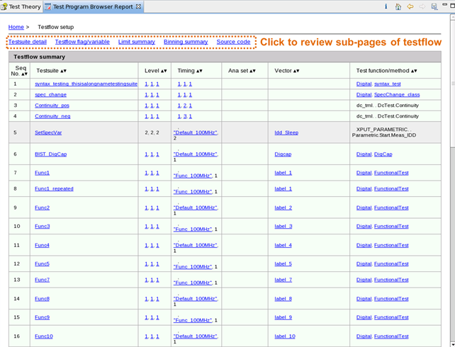

Testflow report
On the home page of the Test Program Browser report, click the hyperlink in the Testflow row, the testflow report containing test suite names, the level, timing, analog, vector setups and the test function/method of each test suite is displayed.
As seen the following screenshot, you can view more detailed settings by clicking the table-content hyperlinks and the hyperlinks above the table.
The hyperlinks above the table let you view test suite details, testflow flags/variables, limits summary, bins summary and the source codes on separated pages.

Functional changes
- Introduced in SmarTest 7.2.2